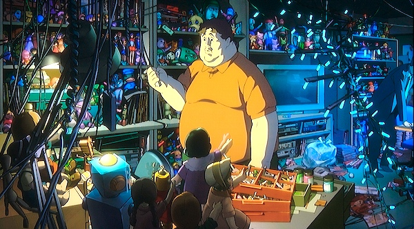

This week at DraftDemoNZ we ran out of good ideas, so we had to resort to a numbered list.
1. Untitled Goon Set
In the wake of the success of the cultural landmark known as The Emoji Movie, Hasbro lawyers sought to snap up trademarks for many online terms and phrases. Among them were papers filed for “collectible card game mechanics” with the names “Twerk”, “Goon”, and “Morbin”. Nothing further has come of it, but as the trademark doesn't expire until 2037, perhaps we can still look forward to Jace Beleren Gooning his way around Three Tree City in the inevitable Return to Bloomburrow.
 You can replace the cake with pretty much anything and the rabbit's reaction in the back is still funny. Use your imagination.
You can replace the cake with pretty much anything and the rabbit's reaction in the back is still funny. Use your imagination.
2. Paprika (the spice, not the movie)
Satoshi Kon's surrealistic cult classic anime feature seems at first glance to be an inspired and exciting choice for a crossover set. Somehow, this isn't the Paprika the design doc refers to. The design brief lists the Simply Organic Company as the partner for this product and suggests the cards should highlight 'Bold and Exciting New Taste Archetypes'. Another informal note leaked to DraftDemoNZ suggests the intriguing: 'food + color sacrifice = tasty?' and 'Spice8Rack social marketing, too obvious???'.
 Actually there's a lot of Paprika in Duskmourn3. Everybody Loves Raymond
DraftDemoNZ reached out to the estate of Ray Romano for comment, only to be stunned by the revelation that he is still alive. Hopefully someone from the show is dead. Not that we have a problem with the show, it just looks a bit embarrassing for our journalistic integrity.
 Fight target mother in law or something, idk
Fight target mother in law or something, idk
4. Lord of the Rings 2
The Lord of the Rings: Tales of Middle-earth™ was an overwhelming success on every measure, so it might be no surprised to hear Wizards of the Coast were very keen for more products in this universe. Along with the more widely known works of Tolkien such as The Silmarillion and The Hobbit, leaked design documents also pointed to WotC pursuing the rights to a much more obscure Middle-Earth novel.
Lord of the Rings 2: The Fifth Age is a 6682 page novel written and self-published by Kyle Crudley under the pen-name K.R.R. Tolkien. Although not officially endorsed by the Tolkien estate, the book developed a cult following online for not entirely positive reasons.
Chudley claims to be the illegitimate grandson of Tolkien, and has written no other published works. However, court documents discovered by DraftDemoNZ have uncovered a lawsuit naming him as the plaintiff in a civil suit against Neill Strauss, claiming that he stole his memoirs and published them in the 2005 book The Game: Penetrating the Secret Society of Pickup Artists.
The story itself is set 800 years after the events of the original trilogy in a version of Middle-Earth with modern technology. Firearms, fighter jets, and tanks are all prevalent alongside magic and fantastical creatures. The Shire has turned into a crime-riddled inner city suburb where the author's self-insert character 'Brodo', finds a knuckleduster infused with Sauron's power. After using the duster to murder several policemen and impress women he is confronted by Gandalf, who tells him that the duster must be destroyed.
The ensuing quest similarly mimics the plot of the original trilogy with frequent diversions that bear many similarities to Michael Bay movies, including Armageddon, Transformers, and Bad Boys 2. Much of the books online fan presence stems from ironic celebrations of these diversions. A Tiktok with a line from the book “and then the troll comes out but he's actually a robot troll and he's not just a normal robot troll but he's one that can turn into a car, but like a real sick lambo with a lightsaber axe” went viral in late 2023 after youtuber Dan Olsen read segments of the book aloud for a charity stream.
It's unknown how far along the magic adaptation of the set went as WotC have denied all knowledge of it. An anonymous playtester in June 2024 claimed to have worked on the set briefly and described a convoluted ammunition mechanic for the new equipment subtype, Gun. They also mentioned several other cards as 'one ring levels of broken' with the titles 'And my Glock', 'Bon Affleckson, Astronaut Miner', and 'Shit Just Got Real'
5. Flowers for Algernon
If you didn't take high school English, Flowers for Algernon is a short heartbreaking sci-fi story about a mentally disabled man who briefly gains superhuman levels of intelligence which he uses to complain about how dumb everyone is while smashing a lot of hotties. There's also a rat.
We couldn't find any verifiable information, so we paid a recently fired WotC game designer to create a concept for us. Journalism!
 Any resemblance, etc, etc
Any resemblance, etc, etc
6. Mark Rosewater's Custom Starfield Character; Buzzed Lightbeer
Removed at the request of Hasbro lawyers, apparently this one is still in development. Please call off the Pinkertons, Mark.
Want to win a full art Nadu, Winged Wisdom? Send in your photoshopped impression of any of these sets to draftdemonz@gmail.com and you could win!
Entries close … eventually. Entries made with software other than Photoshop will be printed out and then thrown in the trash. Staff of Hasbro and their families are not eligible and they should never find out about this blog. Prizes not available outside of France, USA, or Wellington, NZ.